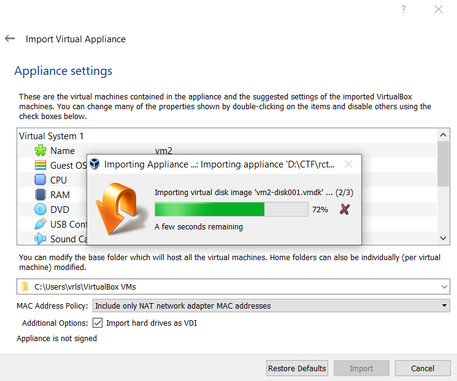
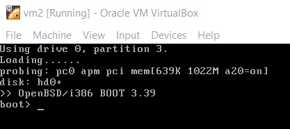
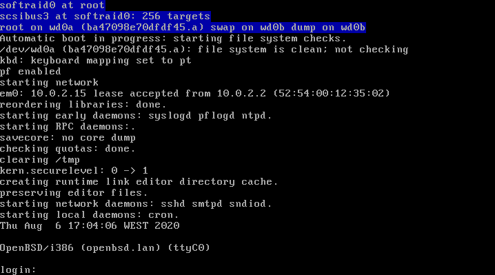
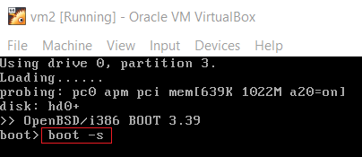
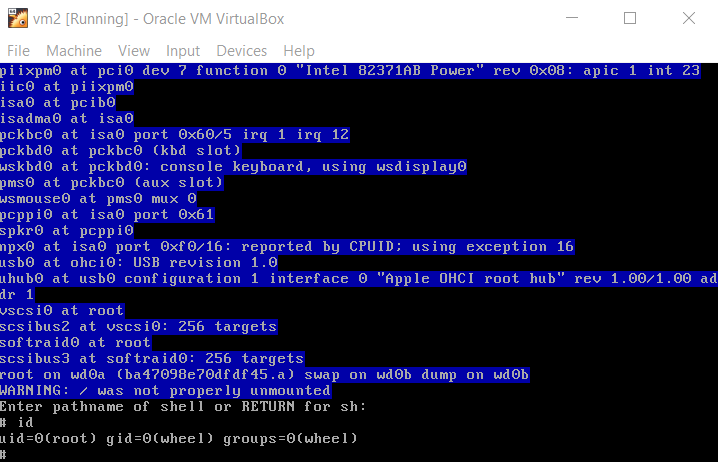
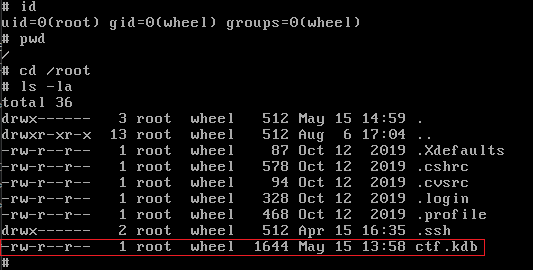
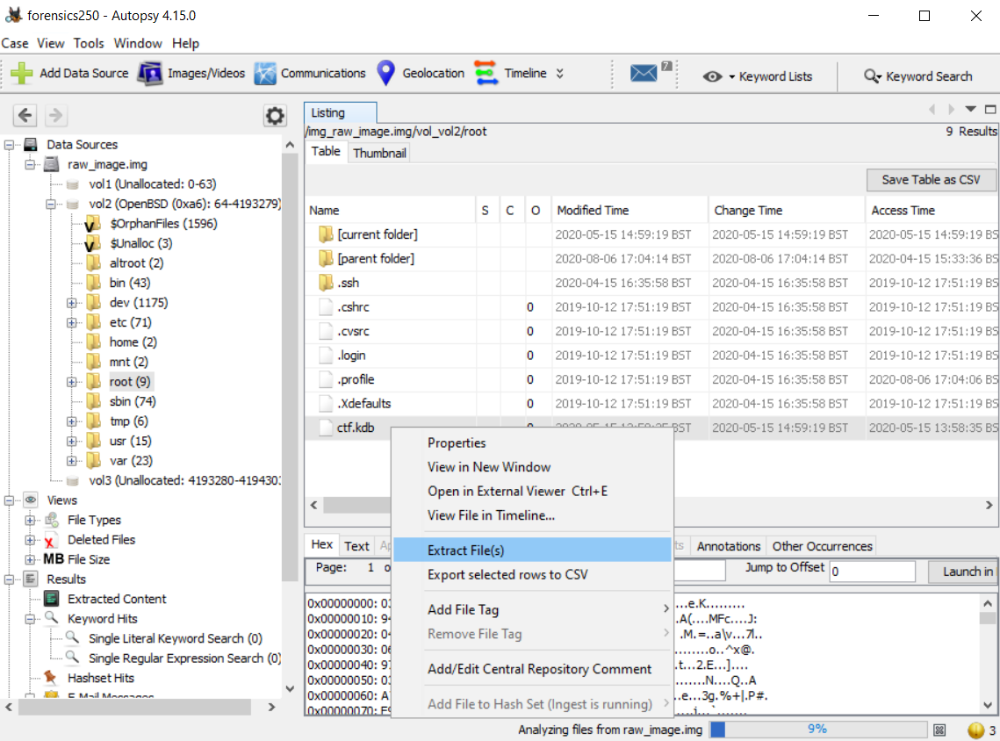
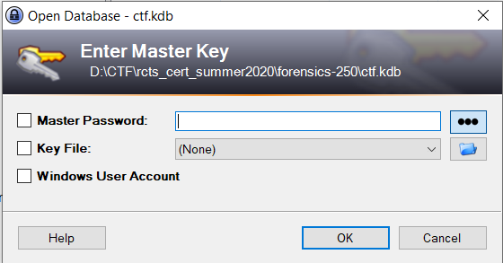
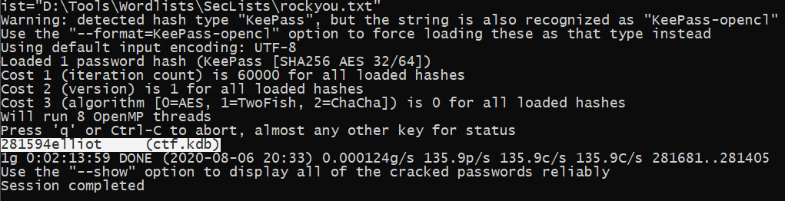
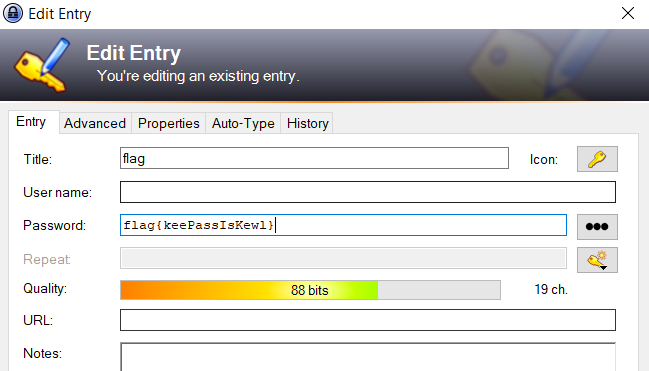

RCTS-CERT Summer 2020 CTF - Forensics250 Writeup
06-08-2020
Introduction
This challenge is based on
Description makes reference to
Analysis
Started by importing the virtual machine into our Virtualbox environment.

When we start the virtual machine, the following command line is presented.

There is a time span of
We can boot the machine by pressing

The machine is now running, however, we don't have the credentials to log in.
Since we are able to pass flags at boot command line, we can force
the system to
According to
Therefore, we are able to get a root shell over the


At this time we have access to the machine and ready to explore further.
Acquisition
While exploring the filesystem, we found two interesting files:
/etc/master.passwd /root/ctf.kdb
The
We obtained
Moving on to the next file

At this time we need to acquire the file in order to perform further analysis.
Since we are running a vanilla virtual machine, i.e., without any fancy Virtualbox Guest Additions, we cannot access the filesystem of the guest machine from our host.
There are several approaches to extract the required file. We could
convert the
After converting the VDI to
We could also use file craving techniques,

The file was successfully extracted using Autopsy software. If we try
to open the password database on

Cracking
A dictionary attack may be useful to recover the
We should use
Once we have the JTR compatible file, we are ready to start.
By running the following command, it will test all the password combinations
within
When we were solving this challenge, @Yanmii_is turned up the turbo on his machine to speed up the cracking process and retrieve the key 🚀

At this time we are able to read the KeePass database file. The file can't be directly opened in KeePass because it was created with an older 1.x version.
Instead, we should create a new 2.x database and import
After importing the selected file, we can read the flag, thus solving the forensics challenge :)

References
- https://summer2020.ctf.cert.rcts.pt/
- https://www.openbsd.org/faq/faq8.html#LostPW
- https://en.wikipedia.org/wiki/Bcrypt
- https://www.openwall.com/john/doc/OPTIONS.shtml
- https://medium.com/@lonardogio/convert-vdi-virtualbox-to-raw-in-windows-c96bded29640
- https://bytesoverbombs.io/cracking-everything-with-john-the-ripper-d434f0f6dc1c
- https://jpdias.me/ctf/security/writeup/2020/08/06/rtcs-fccn-summer-ctf.html